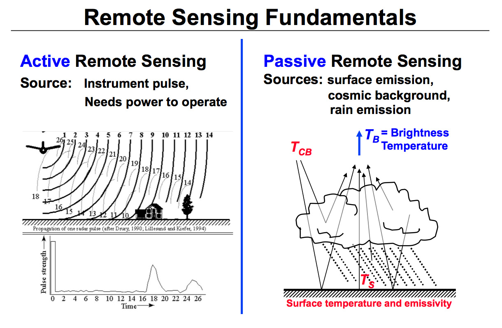
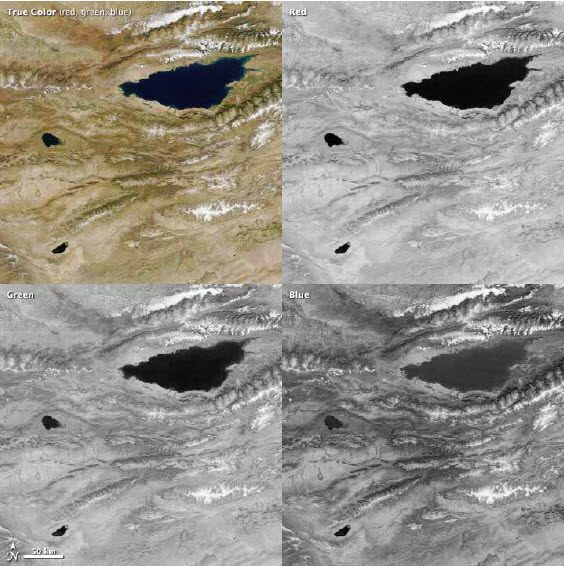

1 Week 1: Getting started with remote sensing
This week is an introduction of remote sensing.
1.1 Summary
1.1.1 The concept of remote sensing
Remote sensing is the process of gathering data about a phenomenon or object without actually coming into touch with it. The phrase is used particularly in reference to learning more about Earth and other planets. It refers to the detection and classification of Earthly objects using satellite or aircraft-based sensor technologies. Based on transmitted signals, it encompasses the atmosphere, the surface, and the oceans (e.g. electromagnetic radiation).
It can be divided into “active” and “passive” remote sensing.
Active: where a signal is emitted to the object by a satellite or aircraft and its reflection is detected by the sensor
Passive: when the reflection of sunlight is detected by the sensor

1.1.2 Open source raster data
There are many open source raster data from aerial photography and satellites, in our course, we use Sentinel data and Landsat data:
Sentinel: Data is provided by the Copernicus Space Component Data Access (CSCDA), operated by the European Space Agency (ESA).
Link: https://scihub.copernicus.eu/dhus/#/home
Landsat: Data is provided by the U.S. Geological Survey (USGS).
Link: https://earthexplorer.usgs.gov/
1.1.3 Piece of work
I learned how to access remote sensing data using two open source databases, Landsat and Copernicus Open Access Hub, their existence make it easy for me to access remote sensing data from anywhere in the world.
Secondly, I learned how to use QGIS, SNAP and some packages in R for simple raster processing calculations and also learned a lot about the terminology, remote sensing and statistics and also having some questions.
1.2 Application
Colour composite image is an important area in remote sensing image application, it is mainly displayed in three primary colours: red, green and blue. By combining different spectral bands (not necessarily visible) to these colours, different features on the ground can be highlighted or distinguished. For example, a false colour composite that uses short-wave infrared, near-infrared and red bands can show vegetation, soil, fire and smoke in different colours.
In the image of Issyk-Kul Lake in Kyrgyzstan, scientists used different lights to realize different observation targets.

The true color is the composite of red, green and blue.
Red light (620 to 780 nm) can help distinguish between minerals and soils containing high concentrations of iron or iron oxide, making it valuable for studying geology. Because chlorophyll absorbs red light, this band is often used to monitor the growth and health of trees, grasses, shrubs and crops. In addition, red light can help to distinguish between different types of plants over a wide area.
Green light (490 to 580 nm) can be used to monitor phytoplankton in the ocean and plants on land. Chlorophyll in these organisms absorbs red and blue light, but reflects green light. Sediments in the water also reflect green light, so a muddy or sandy body of water will look brighter because it reflects both blue and green light
Blue light (450 to 490 nm) is one of the few wavelengths reflected by water” the rest is absorbed. The blue band is therefore very useful for viewing surface features and spotting the bottom of shallow bodies of water. ou can see that the water reflects some blue light. The water in the blue band is lighter than that in the red or green band, although the lake is too deep for the shallow elements to be seen. Man-made pieces like cities and roads also show up well in blue light. It is also the wavelength at which particles and gas molecules in the atmosphere scatter the most, which is why the sky is blue.
1.3 Reflection
When material in week1, I used data from Copernicus Open Access Hub. Then, merged the B2 (blue), B3 (green), B4 (red) and B8 (NIR) in R10m with multiband colour, and knew the details in different enhancement options. Then, I learned about difference between R10m and R20m. During the process, I felt interested in several questions and did exploration.
1.3.1 Exploration of nearst neighbour method
Generally, upsampling is used to complement the situation when the pixel resolution is greater than the source resolution, and a common interpolation method is nearest neighbour, while downsampling is used when pixel resolution is smaller than source resolution. I felt interested in this method, so I searched for some resources. Here is the mechanism of nearest neighbour:
\(X_{src}=X_{dst}*\frac{Width_{src}}{Width_{dst}}\)
\(Y_{src}=Y_{dst}*\frac{Height_{src}}{Height_{dst}}\)
If the calculation results in a fractional number, then either remove the decimal part or round up to get the same value as the original dotted pixel. This method is very simple but inaccurate, the zoomed in image has a very bad mosaic and the zoomed out image has a very bad distortion. The problem lies in the treatment of the fractional part, which is equivalent to the process of colour gradation and cannot be fully equated with the existing colour of pixel. It is possible to use bilinear interpolation, considering the four values around the point that needs to be scaled, to see which value has more influence on it, and to give it more weight, I saw the option of bilinear interpolation then tried it. In addition, cubic has more accurate result because non-linear function can fit better but more complex.
1.3.2 Explanation of T-test
When learning the code to deal with data from Landsat and Sentinel, I found a final paired t-test is performed to test whether the actual means of the urban land type from Landsat and Sentinel are equal, the degree of freedom from the results is 5970, p-value is much smaller than 0.05, which means the actual means of two groups are quite different, and at the same time, this calculation also shows the estimate mean of two samples. There are 95% probability that the true mean is between -9300.307 and -9198.368. data from Sentinel and Landsat is different.
1.3.3 Questions to be explored
There are also several areas of interest to me, one of them is how PCA can be used to reduce the dimensionality of data, particularly in image processing, and I will be doing further study and figuring this out. Then, I would like to know if the image data from satellite remote sensing can be used in AI, as there are already mature deep learning algorithms with a high accuracy rate for image recognition, how to use these images to achieve functions such as automatic recognition and automatic monitoring.